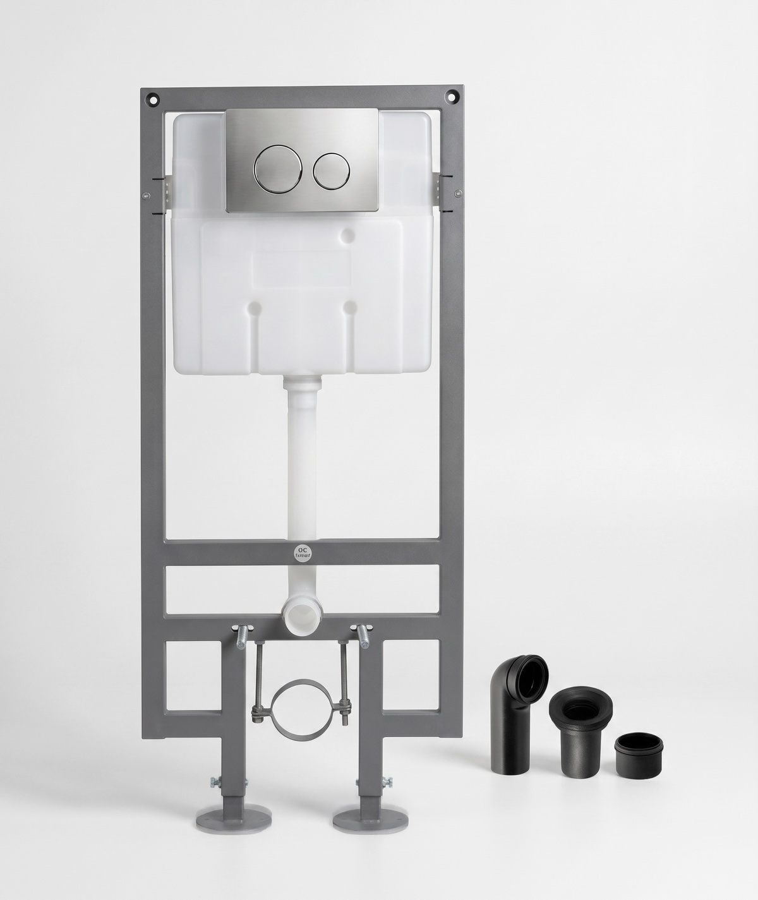
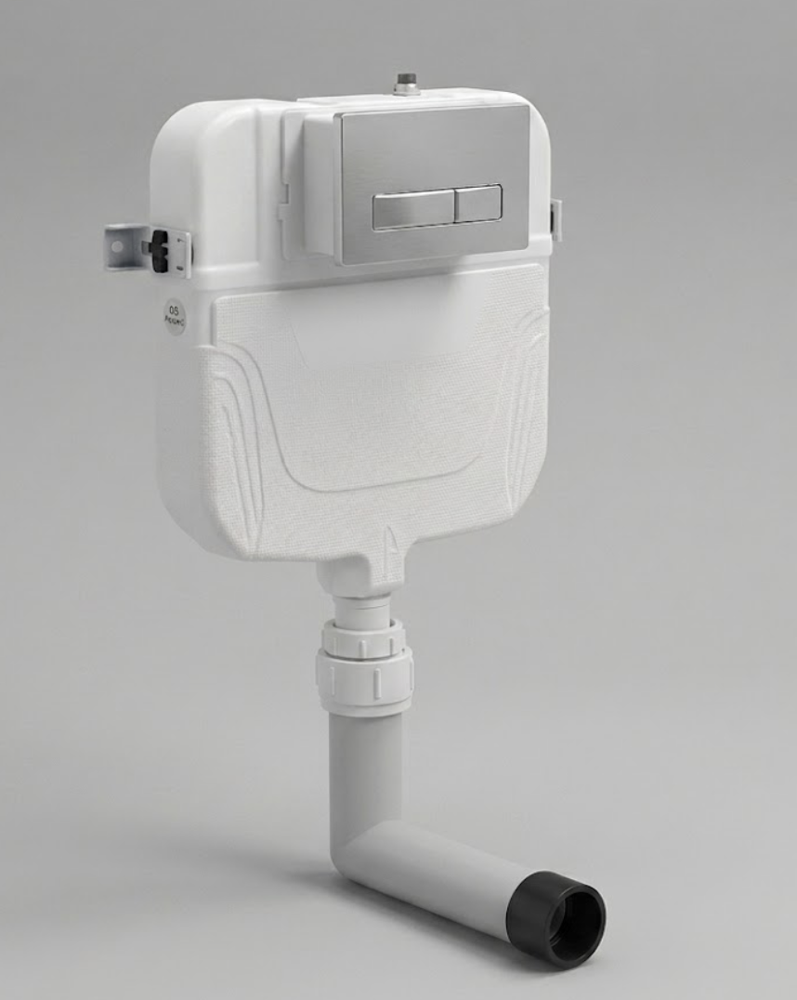
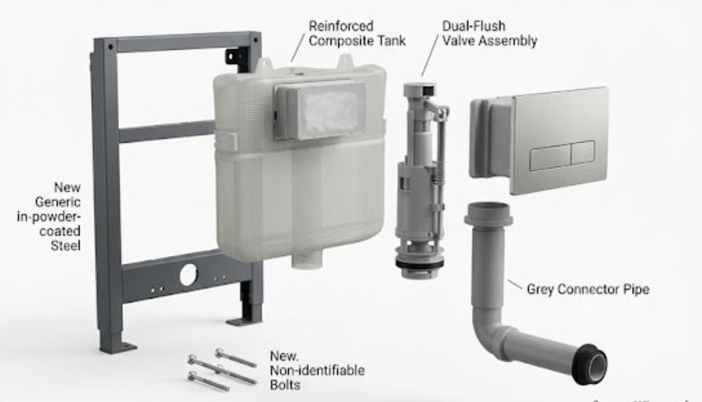
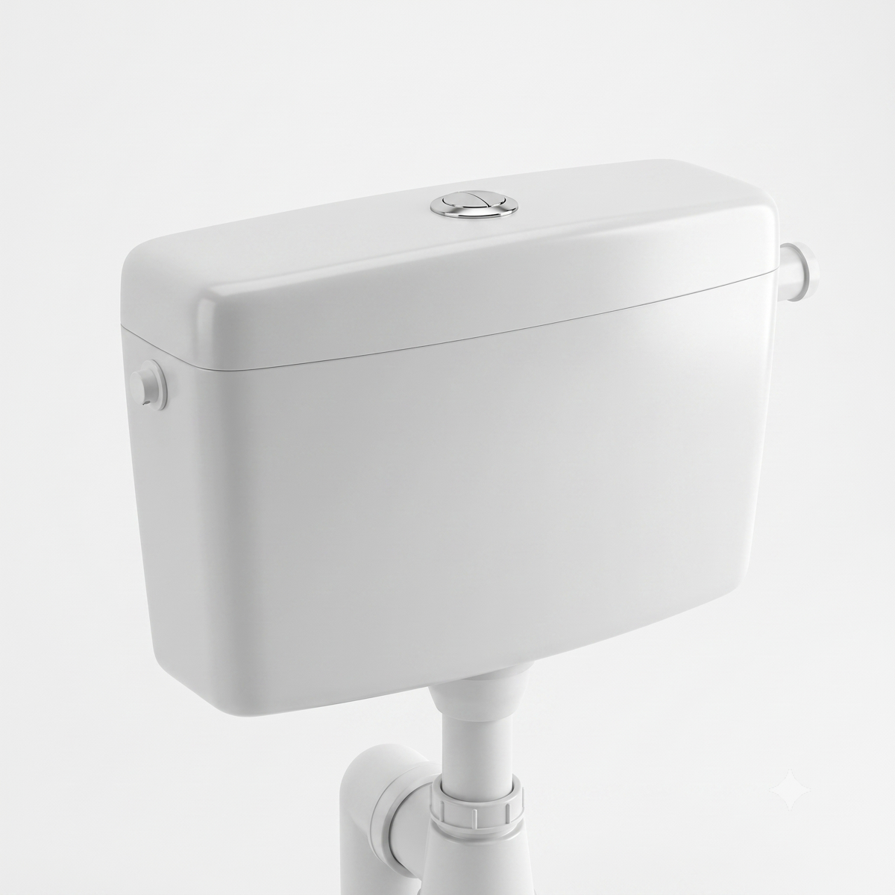
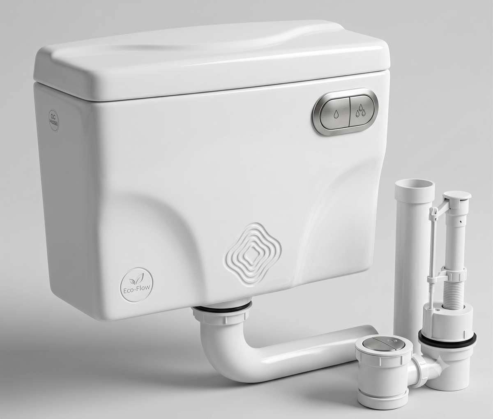
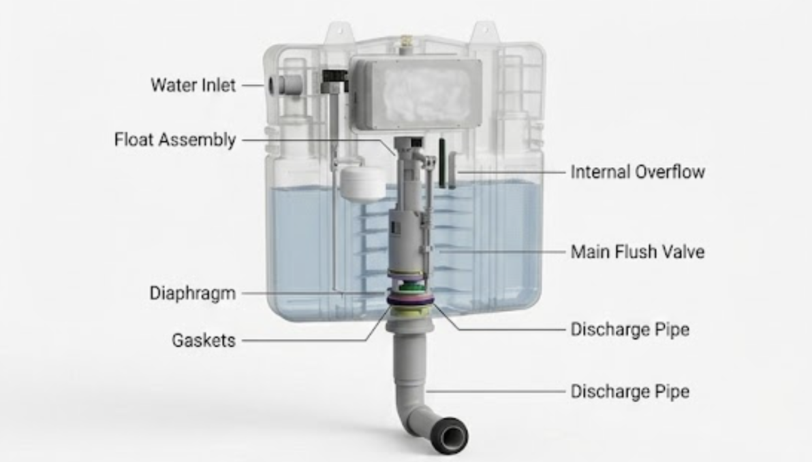

From space-saving concealed cisterns hidden inside the wall to easy-to-retrofit overhead cisterns for standard installations — with single and water-saving dual-flush options across the range.
Two formats: concealed cisterns that hide inside the wall, and overhead cisterns that mount visibly for an easy retrofit. Both come in single-flush and water-saving dual-flush.


Installs inside a false wall, leaving only a slim flush plate visible — the standard choice for wall-hung toilets and premium fit-outs.
Best planned at first-fix stage, before tiling. The flush plate stays accessible afterwards, so a hidden tank is still a serviceable one.

A 3L/6L or 4L/6L dual-flush plate cuts water use by up to two-thirds compared to older 10L single-flush systems.
Standard frames fit within a 1120mm cavity, with adjustable feet to match your finished floor level.
The plate unclips for access to the fill valve and flush mechanism without opening up the wall.
A foam-lined tank body reduces fill and flush noise — noticeable in shared-wall apartment bathrooms.
| Model No. | Frame Height | Flush Volume | Flush Type | Wall Cavity Needed | Compatible With |
|---|---|---|---|---|---|
| GSC-CC-3060 | 1120 mm | 3L / 6L | Dual Flush | 120 mm | Wall-hung pans |
| GSC-CC-4060 | 1120 mm | 4L / 6L | Dual Flush | 120 mm | Wall-hung pans |
| GSC-CC-6000L | 820 mm | 6L | Single Flush | 100 mm | Compact / furniture-mounted pans |
Built in line with IS 7231 guidelines for plastic flushing cisterns. Custom frame heights are available for non-standard wall cavities on request.
Mounts visibly on the wall or close-couples to the bowl. No wall-breaking involved, so it suits renovations and any bathroom where a concealed system isn't practical.
Just as reliable as a concealed system — the choice is about installation convenience and budget, not quality.



Mounts directly to an existing wall or bolts to the toilet bowl — ideal for renovations without breaking tile.
A diaphragm-type inlet valve refills quietly and shuts off cleanly without the knocking older ballcocks are known for.
Traditional single-flush capacities alongside modern dual-flush variants for lower water use.
A rigid, UV-stable plastic tank that resists cracking and yellowing over years of daily use.
| Model No. | Capacity | Flush Type | Mounting | Material | Typical Use |
|---|---|---|---|---|---|
| GSC-OC-0609 | 6 L | Single Flush | Close-Coupled | PVC | Standard flats |
| GSC-OC-1000 | 10 L | Single Flush | Wall-Mounted | PVC | Economy / renovation |
| GSC-OC-1200 | 12 L | Single Flush | Wall-Mounted | PVC | Institutional / hostel |
| GSC-OC-0306 | 3L / 6L | Dual Flush | Close-Coupled | ABS | Modern residential |
| GSC-OC-0406 | 4L / 6L | Dual Flush | Close-Coupled | ABS | Modern residential |
Close-coupled variants bolt directly to the back of the toilet bowl; wall-mounted variants connect via a short flush pipe for pan positions that sit clear of the wall.
Concealed cisterns for a clean, space-saving finish with wall-hung toilets.
Overhead cisterns for a straightforward swap without breaking into tiled walls.
Higher-capacity overhead cisterns built for frequent, shared use.
Concealed systems for a fully hidden, showroom-finish bathroom.
A concealed cistern installs inside the wall with only the flush plate showing — it needs to be planned before tiling. An overhead cistern mounts visibly on the wall or bolts to the toilet, and can be fitted or replaced at any time without touching the wall.
Yes, but it usually means opening up part of the wall to build a cavity for the frame, which adds cost and time versus a straightforward overhead replacement. For most renovations we recommend an overhead cistern unless the bathroom is being fully redone anyway.
A 3L/6L or 4L/6L dual-flush cistern used mostly on the lower setting can cut water use by roughly 50-65% compared to an older 10-12L single-flush tank, without any change in performance.
We offer a 5-year warranty against manufacturing defects on the tank body, and a 2-year warranty on internal fill and flush valve mechanisms.
Share your mobile number and our team will reach out with pricing, catalogues, and seasonal offers.